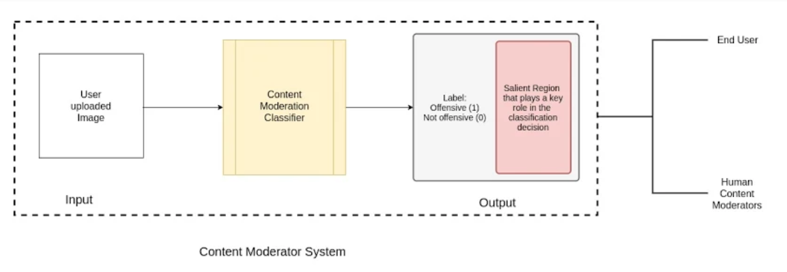
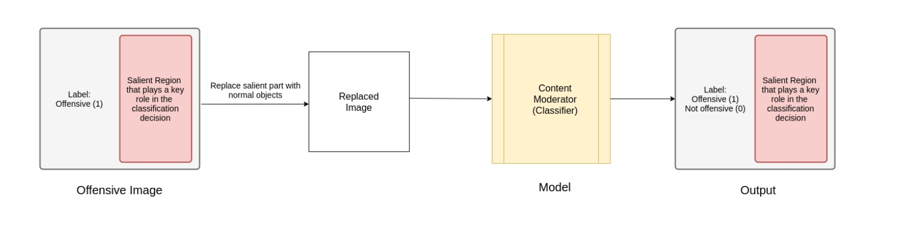
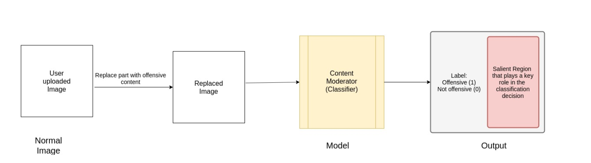

Introduction
One of the biggest challenges faced by social media networks today is content moderation. Users are free to upload text, images and videos which become visible and accessible to millions of other users. This becomes a problem when potentially offensive content demonstrating violence, portraying sexually explicit images, advocating the use of weapons, etc are posted. While there are human content reviewers, the volume of data produced automatically makes this a problem that needs to be solved at scale and is thus a good candidate to be solved using learning techniques. There are numerous issues with content moderation [2]. One of the main problems encountered with content moderation is that the process is both inconsistent and lacks transparency in terms of why a certain content is flagged. So, any robust automation system should be able to consistently capture the correct contents that need to be flagged and be able to clearly explain the reason for flagging of a certain content. This is important as we would like to be able to scale with ease (automated flagging) and at the same time take care to provide feedback (explainability) to the user uploading the content as well as to potentially any human moderators auditing the moderation results to help prevent cases where images get mislabelled as offensive, to investigate appeals from users, etc.
Goals and Objectives
The main objective of our project is to robustly classify and flag images as offensive or non-offensive. These images can be offensive due to the presence of violence, blood, weapons, sexual or other graphic content. Our model should be able to discriminate between such inappropriate images and other images.
The second objective of our project is being able to explain what regions in an image led to it being classified as offensive. The classification decision made by the system should also be explainable to ensure that the system does not harbour any biases such as flagging all images with humans as offensive or tagging all images with red liquids as offensive. We will highlight the salient regions that contribute most to the decision taken by the system. This will help us understand if the model has learned the discriminating factor accurately as well as gain insights into the kind of regions or objects that tend to cause the image to be mislabelled as offensive.
The input to our system will be images and the output would be a binary classification labelling the images as offensive or non-offensive. The images labelled offensive would also be marked with the salient regions that caused the images to be classified as offensive.
System Architecture

Approach
We will approach Content Moderation as a binary classification problem with 2 broad categories - offensive images and non-offensive images.
We propose to use Convolutional Neural Networks (CNNs) to perform a supervised binary classification of images into these two categories. We will be fine-tuning an existing CNN using transfer learning approaches to suit our domain.
We intend to use Grad-CAM[1], which is a class-discriminative localization technique to generate visual explanations of the salience regions in the classified images that caused the images to be classified as offensive.
In performing the classification and generating visual explanations, we build what would form the basis (a minimum viable product version) of a content moderation system for offensive images. The system could help end-users / human moderators identify images to be flagged as well as ‘see’ what caused the image to be flagged as offensive. In further experiments, we aim to explore how augmenting an image and/or replacing certain parts of the image with specific offensive/non-offensive content changes the behaviour.
Why are we approaching the problem as a classification problem and proposing the use of CNNs? What about object detection or any other techniques?
We expect that there are latent factors involved in identifying an image as potentially offensive. For instance, in the case of differentiating between images portraying violence and other images, we may not always be able to look for objects (such as knives), or something specific like fire/blood, etc in the scene in a manner that is scalable. Classification of the images using a fine-tuned Convolutional Neural Network will help us identify the nuances involved in flagging the images. With the proposed approach, we should be able to understand and see the reasoning behind the same as well. We believe that such a model is more helpful in a real-world setting where there’s usually a combination of human content-reviewers, rule-based systems and ML systems working together. This could help reduce the gap in understanding the reasons behind the machine’s take on a certain piece of content versus that of a human.
Experiments and Results
Datasets
-
Kaggle video dataset: [3] This dataset contains a balanced mix of both violent and non-graphic videos from Youtube. The real-life violent content comes majorly from street fights. Apart from the violence videos, there are videos containing regular activities like eating and playing football. We intend to extract frames from each video and treat them as separate, labelled images. This wide range of activities in the dataset would help us make our model robust and take care of corner cases and false positives.
-
Violent Scenes Dataset: [4] This dataset is derived from the video clips of violent films. Apart from physical fights, the scenes in the clips include the presence of blood, fights, fire, guns,cold arms, car chases and other gory images. We found this dataset to be suitable because it encompasses different aspects of violence, in varying intensities and amounts, which would make our model explain a wide range of salient violence features. We have contacted the owners of this dataset and have been allowed by them to use it for our project.
System Model
Our model will use Convolutional Neural Networks(CNNs) for the classification problem. Due to the lack of an extensive dataset, we will use Transfer Learning on a pre-trained network used for scene classification. Even with limited data, transfer learning has shown improved accuracy and speed when compared to training the model from scratch. We intend to fine-tune the existing model to make it more suited for our context.
We will integrate Grad-CAM within our model to explain our classification decision and identify salient regions in the image. This will enable us to create a model that can transparently explain the decisions taken and also help us in identifying the context the system has learned.
Measures of Success
The upfront measure of the success of our project is being able to classify violent images as offensive and being able to clearly point to the localized region in the image which caused the image to be classified as such. A further measure of success is being able to classify scenes with different types of violent activities (from fist-fights to gory accident scenes) and varying degrees of intensities of violence (two people fighting to mob violence). A crucial metric for our project would be perform classifications with as few false negatives as possible.We want the model to learn context-specific appropriateness for images too, i.e, a knife being present in the image of a kitchen should not be classified as offensive.
Classification Outputs
| Input | Output (Classification + Salient Regions) |
|---|---|
| Images with blood, fire, violence such as:
|
Offensive (True Positive) |
| Normal Images such as people playing, eating, objects on a table.
|
Non-Offensive (True Negative) |
| Images which get mislabelled due to the presence of violent elements taken out of context |
Offensive (False Positive) |
| Images that are offensive but do not get categorized as such. This has the highest misclassification cost for our system. |
Non-Offensive (False Negative) |
List of Experiments
| Experiment | Motivation Behind the Experiment | Expected Result | Uncertainties in Results/Process |
|---|---|---|---|
| Transfer Learning to classify images as offensive or not | Identifying latent factors involved in identifying an image as potentially offensive | Binary Classification and Salient Region Detection |
|
| Using an augmented dataset to train model |
Improving the accuracy of our model |
Higher precision and accuracy |
Obtaining/annotating an augmented dataset? |
| Replacing salient regions detected by Grad-CAM with non-offensive objects (eg. replacing a gun in an image with flower pot) |
Check if the classification made depends on the objects only or also the context of the scene |
Image should now be classified as non-offensive given that other parts of the image have no offensive content. |
Is replacing one salient object in the image enough? |
| Replacing salient regions in violent images with a blurred version |
Automatically filter out potential offensive images. |
Possible extension to auto moderate and blur offensive sections. |
|
| Testing the model with degrees of violence (eg. replacing one gunman with a mob) |
How does the classification/explanation change if the replacement is (relatively) less/more violent |
Images should correctly get labelled according to their context |
Model may not pick up heavily suppressed instances of (potential violence) |
Possible Extensions to our Approach:
-
Replacing salient regions detected by Grad-CAM with non-offensive objects and seeing if the classification output changes. This is to check if the classification made depends on the objects only or also the context of the scene .

-
Data Augmentation by adding offensive objects to non-graphic images and checking if the classification of the scene changes.

Team
Shalini Chaudhuri ⋅ Rohit Mujumdar ⋅ Sushmita Singh ⋅ Sreehari Sreejith